Обучение на бухгалтера — это путь к востребованной профессии, связанной с ведением бухгалтерского учета, налоговой и финансовой отчетностью. Сегодня для начинающих бухгалтеров доступны дистанционные курсы и очные форматы обучения, позволяющие получить профессиональные знания и практические навыки по программе 1С, бухгалтерскому и налоговому учету. После завершения курса слушатели осваивают основы ведения учета, учатся составлять бухгалтерскую и налоговую отчетность, а выпускники получают документы установленного образца. Мы составили рейтинг образовательных программ, где обучение проходит под руководством опытных преподавателей и практикующих специалистов. Здесь можно пройти обучение в удобном формате, гибко сочетая учебный процесс с работой и повышая профессиональный уровень, необходимый для успешной карьеры бухгалтера в коммерческой сфере.
Информация обновлена:
ТОП онлайн-курсов обучения на Бухгалтера
- 🏆 Главный бухгалтер – Академия Эдюсон (🎁 по промокоду RATING5 скидка 5%)
- 🏆 Главный бухгалтер – SF Education (🎁 по промокоду onlinekursy скидка 15%)
- 🏆 Главный бухгалтер — Московская Бизнес Академия
- От бухгалтера до главного бухгалтера (с квалификацией аудитора) – АНО «НИИДПО»
- Главный бухгалтер – МИПО (🎁 по промокоду onlinekursy скидка 10%)
- Главный бухгалтер – Skillbox
- Главный бухгалтер – Нетология
- Главный бухгалтер – ИПО (🎁 по промокоду onlinekursy12 скидка 12%)
- Главный бухгалтер – Учебный центр АПОК
- Главный бухгалтер – Учебный центр ЭКОДПО
- Главный бухгалтер – НЦПО
- Главный экономист – Русская Школа Управления (🎁 по промокоду onlinekursy20 скидка 20%)
Отличительные преимущества каждой дистанционной программы обучения на Бухгалтера
| № | Название курса | Отличительные преимущества | |
|---|---|---|---|
| 🥇 | Главный бухгалтер – Академия Эдюсон | Доступ навсегда, поддержка 365 дней, тренажёры 1С и Excel, разбор налоговой реформы 2026, диплом и удостоверение | Перейти |
| 🥈 | Главный бухгалтер – SF Education | Диплом международного образца (ЕС), 47 кейсов с собеседований, Trade-In, встроенные игровые механики, доступ навсегда | Перейти |
| 🥉 | Главный бухгалтер – Московская Бизнес Академия | Диплом в ФРДО, 70% практики, бонусные модули: ИИ, тайм-менеджмент, HR, доступная рассрочка до 24 мес | Перейти |
| 4 | От бухгалтера до главного бухгалтера – АНО «НИИДПО» | Две квалификации (главбух + аудитор), доступ к 13 000+ вебинарам, библиотека biblioclub.ru, акцент на внутренний контроль | Перейти |
| 5 | Главный бухгалтер – МИПО | Диплом в ФИС-ФРДО, длительное обучение (1060 ч), 94% выпускников увеличили доходы, чаты с кураторами и студентами | Перейти |
| 6 | Главный бухгалтер – Skillbox | Гарантия трудоустройства, AI-ассистент, биржа проектов, курс по удалённому заработку в подарок | Перейти |
| 7 | Главный бухгалтер – Нетология | Обучение после 19:00, фокус на 1С 8.3, возможность вернуть деньги, портфолио из задач, курс по учётной политике | Перейти |
| 8 | Главный бухгалтер – ИПО | 12 преподавателей с учеными степенями, доступ к urait.ru, модуль 1С:Торговля, длительность до 36 месяцев | Перейти |
| 9 | Главный бухгалтер – АПОК | Минимальная цена среди всех, персональная программа, быстрая доставка документов, возврат денег при несоответствии | Перейти |
| 10 | Главный бухгалтер – ЭКОДПО | Диплом за 1 день (VIP), 100% онлайн, неограниченные пересдачи, бесплатная доставка, тарифы под задачи | Перейти |
| 11 | Главный бухгалтер – НЦПО | Минимальная стоимость (от 15 850 ₽), официальные гарантии, диплом с бессрочной регистрацией, гибкие сроки | Перейти |
| 12 | Главный экономист – Русская Школа Управления | Фокус на управленческий учет, формат очно/онлайн, 5 дней интенсива, материалы обновляются по Приказу №499м | Перейти |
Профессиональные направления обучения для Бухгалтеров
1. Бухгалтер-аудитор
- Бухгалтер. Аудитор (710ч) — НИИДПО
- Курс Аудитор — SF Education
- Бухгалтерский учет, анализ и аудит — ЭКОДПО
- Профессиональная переподготовка - Аудитор — НЦПО
- Внутренний аудитор — Русская Школа Управления
- Аудитор — МИПО
- Аудитор — ИПО
2. Бухгалтерский учет в строительстве
- Бухгалтерский и налоговый учет в строительных организациях (340ч) — АНО «НИИДПО»
- Согласование бухгалтерского и налогового учета в организации. Актуальные вопросы УСНО ИПБ России — Московская Бизнес Школа
- Бюджет строительного проекта: планирование, сметирование и контроль
— Московская Бизнес Школа - Профессиональная переподготовка по сметному делу в строительстве по всей России — учебный центр АПОК
- Повышение квалификации по бухгалтерскому учету в строительстве в Санкт-Петербурге — НЦПО
3. Бухгалтер маркетплейсов
- Финансы на маркетплейсах — Эдюсон Академия
- Курс Финансы и аналитика на маркетплейсах — SF Education
- Курс Главный бухгалтер — SF Education
- Профессия Бухгалтер + ИИ — Skillbox
4. Бухгалтер по заработной плате
- Бухгалтер — Эдюсон Академия
- Курс Главный бухгалтер — SF Еducation
- Экономист по труду и заработной плате — Русская Школа Управления
- Бухгалтер по заработной плате — МИПО
- Бухгалтерский и налоговый учет в организациях малого бизнеса и ИП — МИПО
- Бухгалтер по расчету заработной платы — НИПКЭФ
- Экономика и бухгалтерский учет — НИПКЭФ
- Бухгалтер по заработной плате — ИПО
- Инструменты бухгалтера. 1С: Бухгалтерия, 1С: ЗУП — Skillbox
- Профессия Бухгалтер — Бруноям
- Бухгалтер по расчету заработной платы — Профессиональная переподготовка — учебный центр АПОК
- Бухгалтер по расчету заработной платы — Профессиональная переподготовка — учебный центр ЭКОДПО
- Профессиональная переподготовка бухгалтера по заработной плате — НЦПО
1. 🏆 Главный бухгалтер – Академия Эдюсон
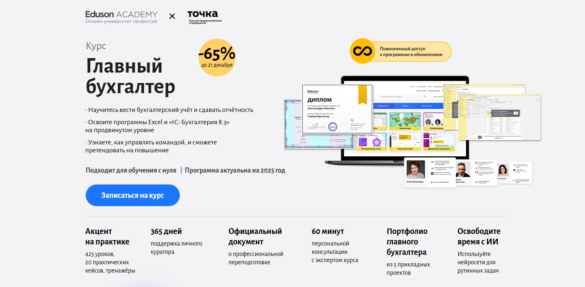
- ✅ Официальный сайт: eduson.academy
- 💸 Цена: 84 700 ₽ со скидкой −65%, экономия до 157 300 ₽.
- 💳 Рассрочка: 7 058 ₽/мес, беспроцентная на 12 месяцев, возможна оплата от юридического лица.
- 📚 Формат: дистанционное обучение: видеоуроки, практические задания, тесты, тренажёры Excel и 1С, кейсы с реальной практикой.
- ⏳ Продолжительность: зависит от графика обучения, доступ к материалам курса предоставляется навсегда.
- 📜 Документ: диплом о профессиональной переподготовке и удостоверение о повышении квалификации установленного образца.
- 📝 Трудоустройство: помощь с резюме, подготовка к интервью, передача резюме партнёрам и сопровождение после завершения курса.
- 🔷 Для кого подходит курс: для начинающих бухгалтеров с нуля, опытных специалистов, главных бухгалтеров, предпринимателей и руководителей.
Особенности:
Образовательная программа построена на практике и ориентирована на требования рынка бухгалтерия. Студенты проходят обучение в дистанционной форме и осваивают бухгалтерскому учету, налоговым учетом и финансовую отчетность без перегруженной теории. Занятия проходят в удобный формат онлайн с поддержкой личного куратора 365 дней. В процессе обучения используются тренажёры, повторяющие реальные рабочие системы 1С и Excel. Программы включают разбор налоговой реформы 2026 года и изменения в налоговом законодательстве. После окончания обучения выпускники получают профессиональное образование и документы, которые принимают работодатели. Курс подходит для начинающих специалистов и опытных бухгалтеров, которые хотят повысить профессиональный уровень и доходы.
Чему учатся студенты:
- Вести бухгалтерский и налоговый учет в коммерческой организации
- Формировать бухгалтерскую и налоговую отчетность по актуальным требованиям
- Работать с программами 1С: Бухгалтерия 8.3 и Excel на продвинутом уровне
- Контролировать ведения бухгалтерии и денежные потоки
- Начислять зарплаты сотрудникам и рассчитывать налоги
- Анализировать финансовых показателей и отчетностью
- Управлять командой бухгалтеров и выстраивать процессы учета
- Использовать нейросети для автоматизации бухгалтерских задач
Преподаватели:
- Виталий Полехин — президент Международной организации инвесторов INVESTORO, эксперт в финансах и инвестициях
- Виктор Бурмистров — вице-президент по финансам Maximum Education, опыт работы в МТС и ГК «Дикси»
- Оксана Дажун — основатель Dajun Consulting, официальный спикер Сколково и Сбербанка
- Руслан Голованов — директор департамента МСФО холдинга «КорпЭстейт», член ACCA
- Мария Сафронова — эксперт по рекрутменту в сфере финансов, опыт работы в KPMG Russia
- Юлия Урванова — эксперт по налогообложению и трудовому праву, 25+ лет опыта
- Наталья Кемурджиан — специалист по регламентированному учёту и зарплате, обладатель DipFR
Преимущества:
- Дистанционных курсов с бессрочным доступом к обновлениям
- Практическое занятие в формате тренажёров и кейсов
- Подходит для начинающих бухгалтеров и опытных специалистов
- Акцент на ведения бухучета и реальной практике
- Поддержка куратора и консультации с экспертами
- Официальные документы о профессиональной подготовке
- Помощь с трудоустройству и карьерным ростом
Отзывы учеников:
Выпускники отмечают понятную подачу материалов курса, удобный формат дистанционного обучения и сильную практическую часть. Студенты получают базовых знаний и уверенные навыков работы в 1С и Excel. Часто выделяют поддержку кураторов, актуальность учебных материалов и пользу для карьеры бухгалтера. Многие прошли курс для повышения квалификации и отмечают рост профессионального уровня и доходов после окончания курсов.
Перейти на официальный сайт курса2. 🏆 Главный бухгалтер – SF Education
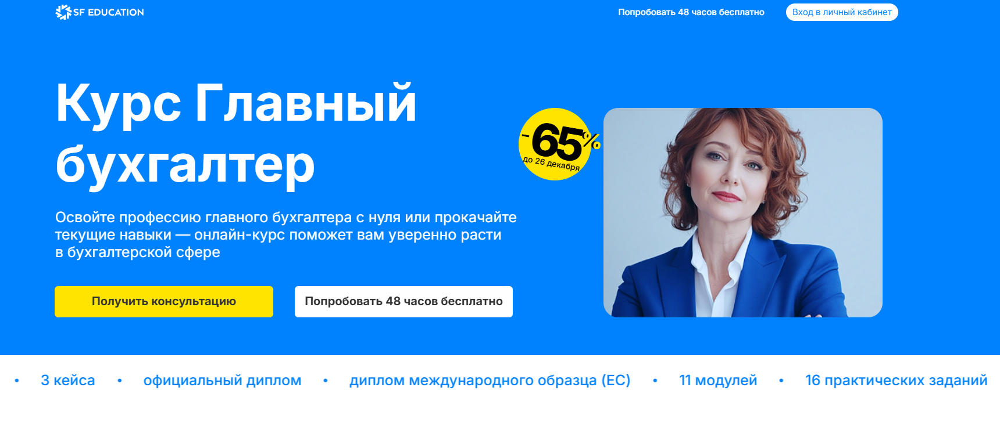
- ✅ Официальный сайт: sf.education
- 💸 Цена: от 32 508 ₽ по акции (до 65% скидка)
- 💳 Рассрочка: от 2 709 ₽/мес, беспроцентная на 12 месяцев, первый платеж через месяц
- 📚 Формат: дистанционное обучение: видеолекции, тесты, практические задания, вебинары, кейсы
- ⏳ Продолжительность: 4 месяца / 11 модулей / 223+ часов занятий
- 📜 Документ: диплом международного образца (ЕС) + удостоверение о повышении квалификации
- 📝 Трудоустройство: карьерная консультация, помощь в создании резюме и подборе вакансий
- 🔷 Для кого подходит курс: начинающим бухгалтерам, главбухам, экономистам, специалистам по финансам и тем, кто хочет пройти профессиональную переподготовку
Особенности:
Программа курса ориентирована на получение практических навыков ведения бухгалтерского и налогового учёта. Курс разработан опытными преподавателями и включает реальные кейсы, задания, сквозные проекты и актуальные данные по бухучету. Форматы обучения адаптированы под занятых специалистов: доступ открыт навсегда, можно учиться в удобное время и темпе. Дистанционные курсы обновлены в этом году, соответствуют последним требованиям законодательства и запросам рынка. В обучении активно используются программы 1С, Excel и другие цифровые инструменты. Выпускники получают дипломы, которые признаются в России и ЕС, что расширяет возможности трудоустройства. В процессе обучения слушатели осваивают профессиональные бухгалтерские стандарты, отчетность и налоговую оптимизацию. Уже после прохождения курсов можно претендовать на высокооплачиваемые позиции.
Чему учатся студенты:
- Вести бухгалтерский и налоговый учет в 1С
- Составлять финансовую и бухгалтерскую отчетность
- Работать с системами налогообложения и проводить расчет налогов
- Анализировать финансовые данные и готовить презентации
- Автоматизировать процессы учета и отчетности
- Проводить аудит и подготовку к проверкам
- Работать с первичной документацией и зарплатными проектами
Преподаватели:
- Ильнар Фархутдинов — Директор по корпоративным финансам, GC Invent
- Юрий Чистяков — Директор консалтинговой фирмы, ООО "Акцент"
- Виктория Фадеева — Financial BP, Royal Canin
- Алла Мишина, ACCA — Финансовый аналитик, TGT Oilfield Services
Преимущества:
- Поддержка кураторов и экспертов на каждом этапе обучения
- Доступ ко всем материалам курса и обновлениям навсегда
- 47 кейсов с реальных собеседований в сфере финансов
- Встроенные игровые механики для повышения мотивации
- Возможность получения налогового вычета и участия в Trade-In программе
- Карьерная консультация и доступ к закрытому чату с вакансиями
- Профессиональная переподготовка с дипломом и международной аккредитацией HISTES
- Форматы обучения подойдут для любого графика: можно совмещать с работой
Отзывы учеников:
Студенты отмечают удобный формат дистанционного обучения, насыщенную и понятную программу, квалифицированных преподавателей и практическую направленность заданий. Многим удалось повысить квалификацию и пройти профессиональную переподготовку без отрыва от работы. Часто хвалят карьерную поддержку и возможность бесплатно попробовать курс в демо-режиме.
Перейти на официальный сайт курса3. 🏆 Главный бухгалтер — Московская Бизнес Академия
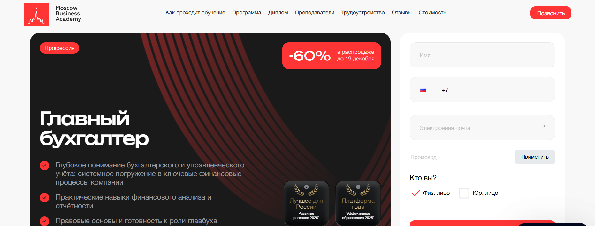
- ✅ Официальный сайт: moscow.mba
- 💸 Цена: полная стоимость — 119 200 ₽.
- 💳 Рассрочка: от 4 966 ₽ в месяц до 24 месяцев без переплат, первый платёж через месяц.
- 📚 Формат: дистанционное обучение: видеоуроки, практические задания, итоговый проект, обратная связь от кураторов и преподавателей.
- ⏳ Продолжительность: 7 месяцев.
- 📜 Документ: диплом о профессиональной переподготовке, вносится в ФРДО + сертификат установленного образца.
- 📝 Трудоустройство: помощь в подготовке резюме, прохождении собеседования, поиск вакансий, карьерные консультации.
- 🔷 Для кого подходит курс: начинающим бухгалтерам, специалистам в сфере налогообложения, бухгалтерии, претендующим на должность главного бухгалтера.
Особенности:
Программа создана для подготовки профессиональных бухгалтеров с фокусом на практическую сторону профессии бухгалтера. Благодаря дистанционному формату, обучаться можно с гибким графиком и доступом к материалам курса из любой точки. Слушатели осваивают бухгалтерский и налоговый учёт, учатся вести финансовую отчетность, работают с программами 1С и Excel. Учебный процесс построен на реальных кейсах, а занятия ведут опытные преподаватели. Образование завершается итоговым проектом и выдачей официального диплома. Курс подходит как для начинающих специалистов, так и для опытных бухгалтеров, желающих повысить квалификацию и улучшить навыки в ведении бухгалтерского учета и управленческой отчетности.
Чему учатся студенты:
- Вести бухгалтерский и управленческий учет
- Составлять налоговую и бухгалтерскую отчетность
- Оптимизировать налогообложение предприятия
- Использовать 1С и Excel в работе бухгалтера
- Разрабатывать учетную политику организации
- Понимать основы договорного и корпоративного права
- Анализировать финансовую отчетность и планировать бюджет
Преподаватели:
- Ицхак Пинтосевич — эксперт по личностному росту, бизнес-тренер, автор 15 книг
- Ангелина Шам — корпоративный психолог, кандидат наук, специалист по коммуникациям
- Елена Васильева — директор «Форос Аудит», эксперт в налогообложении, автор курсов
Преимущества:
- Поддержка кураторов на протяжении всего обучения
- Актуальные программы, обновлённые в этом году
- Диплом с регистрацией в федеральном реестре
- 70% курса — практические задания, приближённые к реальным условиям
- Карьерная поддержка после окончания курсов
- Форматы обучения — гибкие, можно совмещать с работой
- Бонусные модули: ИИ в бухгалтерии, тайм-менеджмент, HR и бюджетирование
- Доступная стоимость курсов и рассрочка без переплат
Отзывы учеников:
Выпускники отмечают удобный формат дистанционного обучения, высокую квалификацию преподавателей и насыщенность курса практическими заданиями. Студенты довольны гибким графиком, поддержкой кураторов и возможностью трудоустройства сразу после завершения обучения.
Перейти на официальный сайт курса4. От бухгалтера до главного бухгалтера (с квалификацией аудитора) – АНО «НИИДПО»
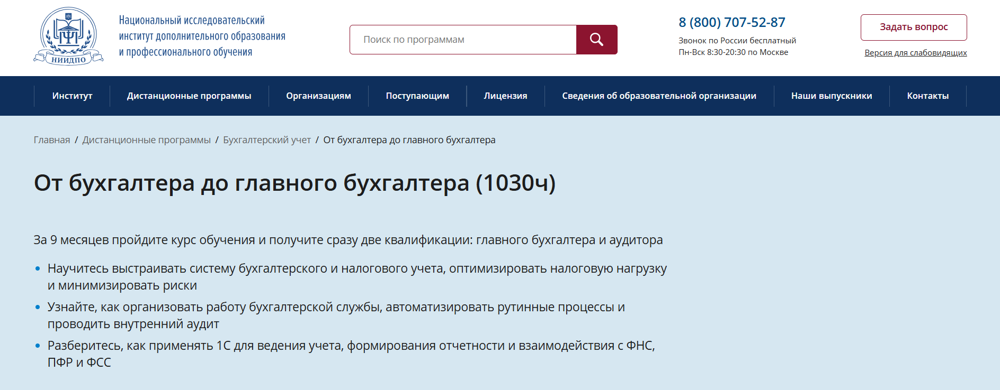
- ✅ Официальный сайт: niidpo.ru
- 💸 Цена: 96 800 ₽ — со скидкой 52 900 ₽
- 💳 Рассрочка: 0% на 12 месяцев от 4410 ₽/мес, без первого взноса. Яндекс PAY — без комиссии на 2 месяца
- 📚 Формат: дистанционное обучение — лекции, практические задания, тесты, вебинары, обратная связь от преподавателей
- ⏳ Продолжительность: 35 недель (возможно пройти за 30 недель)
- 📜 Документ: диплом о профессиональной переподготовке + сертификат компетенций
- 📝 Трудоустройство: обучение помогает получить позицию главного бухгалтера, аудитора, внутреннего контролера
- 🔷 Для кого подходит курс: для начинающих бухгалтеров, опытных специалистов, предпринимателей и сотрудников смежных сфер
Особенности:
Программа сочетает налоговый и бухгалтерский учет, управленческий учет и внутренний контроль в одном курсе, давая комплексные знания в сжатые сроки. Обучение проходит полностью онлайн, включая итоговую аттестацию. Курс подходит тем, кто хочет повысить квалификацию или освоить новую профессию в удобной дистанционной форме. Программа предоставляет прикладные знания — от оформления первичных документов до ведения налоговой отчетности в 1С. Слушатели получают бессрочный доступ к лекциям и более 13 000 записей вебинаров. Выбирая формат обучения, студенты могут заниматься по индивидуальному графику. В процессе обучения возможно применение полученных знаний на практике, включая работу в 1С и взаимодействие с ФНС.
Чему учатся студенты:
- Вести бухгалтерский и налоговый учет на всех этапах
- Составлять налоговую и бухгалтерскую отчетность
- Проводить внутренний аудит и контролировать финансы
- Автоматизировать процессы в 1С и Excel
- Руководить бухгалтерской службой и закрывать отчетные периоды
- Анализировать финансовую отчетность и формировать управленческие выводы
- Готовить компанию к проверкам и взаимодействовать с контролирующими органами
Преподаватели:
- Программа реализуется при участии экспертов-практиков, кандидатов наук и действующих специалистов в сфере бухучета и аудита
Преимущества:
- Дистанционный формат обучения без отрыва от работы
- Выдача двух квалификаций — главного бухгалтера и аудитора
- Обратная связь и поддержка от опытных преподавателей
- Актуальные знания в соответствии с профессиональными стандартами
- Бессрочный доступ к материалам курса после окончания обучения
- Обучение по доступной цене с возможностью беспроцентной рассрочки
- Бонусы при оплате и налоговый вычет до 13%
- Доступ к университетской библиотеке biblioclub.ru
Отзывы учеников:
Слушатели курса часто отмечают доступную подачу материала, профессионализм преподавателей и удобный дистанционный формат. Многие ценят возможность совмещать обучение с работой, структурированность программы и полезность практических заданий. Большим плюсом называют получение двух квалификаций за одно обучение.
Перейти на официальный сайт курса5. Главный бухгалтер – Московский институт профессионального образования
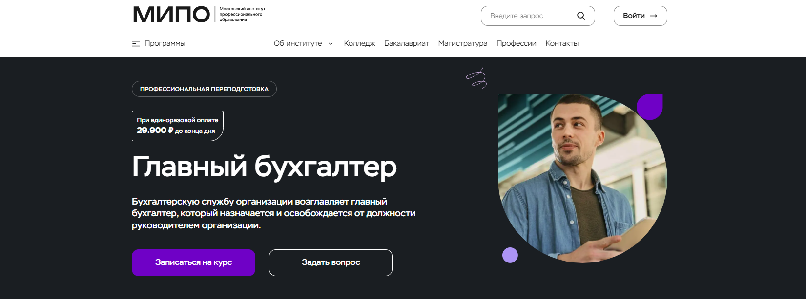
- ✅ Официальный сайт: mipo.msk.ru
- 💸 Цена: 54 700 ₽ (скидка 60%).
- 💳 Рассрочка: 24 месяца, от 2 279 ₽ в месяц, без переплат.
- 📚 Формат: дистанционные курсы, видеоуроки, вебинары, тестирование, практические задания, кейсы, чаты с кураторами и студентами.
- ⏳ Продолжительность: 1 год (1060 часов).
- 📜 Документ: диплом о профессиональной переподготовке с внесением в реестр ФИС-ФРДО.
- 📝 Трудоустройство: 72% выпускников перешли в более престижные компании, 94% увеличили доходы.
- 🔷 Для кого подходит курс: начинающих бухгалтеров, действующих специалистов, предпринимателей, желающих вести бухгалтерский и налоговый учёт самостоятельно.
Особенности:
Образовательная программа разработана для тех, кто хочет пройти профессиональную переподготовку в сфере бухгалтерии без отрыва от работы. Дистанционный формат даёт доступ к материалам курса из любой точки мира и позволяет самостоятельно планировать график обучения. Курс включает в себя всё необходимое для освоения профессии бухгалтера — от теории до реальной практики. После завершения обучения студенты получают официальный диплом, внесённый в государственный реестр. Все занятия ведут опытные преподаватели с подтверждённой квалификацией. Для слушателей доступна рассрочка и налоговый вычет. Курсы соответствуют актуальным требованиям рынка и обновляются по результатам исследований в области образовательных услуг.
Чему учатся студенты:
- Вести бухгалтерский и налоговый учёт
- Формировать бухгалтерскую и финансовую отчётность
- Работать в программах 1С
- Понимать основы аудита и законодательства РФ
- Применять профессиональные стандарты и этику
- Обрабатывать большие объёмы данных
- Рассчитывать зарплаты сотрудникам
- Анализировать финансовое состояние предприятия
Преподаватели:
- Одоевский Алексей — сертифицированный преподаватель 1С, консультант с опытом более 10 лет
- Брюткина Марина — член Палаты налоговых консультантов, финансист, опыт работы главным бухгалтером свыше 10 лет
- Хисамова Ольга — практикующий бухгалтер, налоговый консультант, предприниматель, 20+ лет стажа
- Александров Вячеслав — финансовый консультант, эксперт по корпоративным финансам и МСФО
- Ульянкин Олег Валерьевич — кандидат экономических наук
- Васильева Елена — генеральный директор аудиторской компании, эксперт в бухучёте и управлении
Преимущества:
- Официальный диплом с внесением в ФИС-ФРДО
- Гибкий график обучения и удобный формат
- Программа адаптирована для начинающих и опытных бухгалтеров
- Обновляемый контент по последним изменениям в налоговом и трудовом законодательстве
- Вебинары и доступ к записям занятий на весь срок курса
- Поддержка кураторов и обратная связь от преподавателей
- Возможность совмещать обучение с работой
- Обучение от экспертов с международной практикой
Отзывы учеников:
Студенты института чаще всего отмечают удобный дистанционный формат, поддержку от кураторов и преподавателей, а также актуальность программ. Многие отмечают повышение квалификации, уверенность в своих знаниях и успешное трудоустройство после завершения курса. Положительные отзывы также связаны с доступной стоимостью обучения и качеством образовательных материалов.
Перейти на официальный сайт курса6. Главный бухгалтер – Skillbox
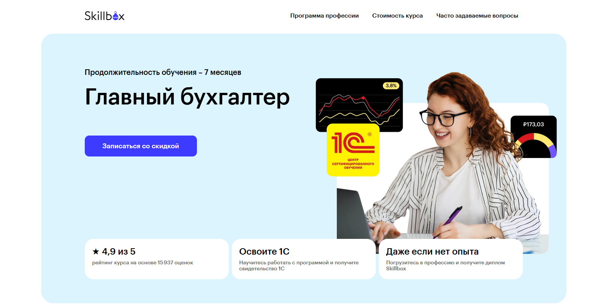
- ✅ Официальный сайт: skillbox.ru
- 💸 Цена обучения: 83 226 ₽ (скидка до 60%)
- 💳 Рассрочка: 3 783 ₽/мес на 22 месяца, первый платёж через 3 месяца, без процентов
- 📚 Формат: дистанционное обучение — видеолекции, практические задания, тесты, проекты, обратная связь от кураторов
- ⏳ Продолжительность: 7 месяцев
- 📜 Документ: диплом о профессиональной переподготовке или сертификат установленного образца
- 📝 Трудоустройство: помощь с резюме и портфолио, подготовка к собеседованиям, закрытый канал с вакансиями, гарантия трудоустройства
- 🔷 Для кого подходит курс: для начинающих бухгалтеров, специалистов без опыта, тех, кто хочет освоить профессию бухгалтера или повысить квалификацию
Особенности:
Программа профессиональной подготовки нацелена на формирование практических навыков ведения бухгалтерии и налогового учёта. Обучение проходит в дистанционной форме, что делает курс доступным для слушателей из любых регионов. В курс включены реальные кейсы и доступ к актуальным версиям программы 1С. Поддержка опытных преподавателей и персонального AI-ассистента помогает быстрее усвоить учебные материалы. Студенты проходят обучение с гибким графиком и могут совмещать его с работой. После завершения курса выпускники получают документ, подтверждающий их профессиональный уровень. 85% выпускников находят работу в течение 3 месяцев после окончания обучения. Курс регулярно обновляется — последнее обновление в этом году. В подарок предоставляется дополнительный курс по заработку на удалёнке.
Чему учатся студенты:
- Вести бухгалтерский и налоговый учёт
- Формировать и сдавать бухгалтерскую и налоговую отчётность
- Работать в программе «1С:Бухгалтерия 8»
- Проводить финансовое планирование и анализ
- Составлять бухгалтерский баланс и отчёт о движении денежных средств
- Использовать Excel и Google Sheets в работе бухгалтера
- Оптимизировать бизнес-процессы
- Подготавливать налоговую декларацию по УСН
Преподаватели:
- Ирина Рек — опыт 15+ лет в бухгалтерии, автор программы
- Валерия Мартынова — 11 лет стажа, консультант в сфере бухучета
- Людмила Ганжа — более 20 лет практики, преподаватель
- Ирина Смыслина — 25 лет в налоговой сфере, руководитель отдела
- Ренат Шагабутдинов — сертифицированный тренер MS Office, 10 лет стажа
Преимущества:
- 70% курса — это практика с реальной бухгалтерской документацией
- Доступ к программам «1С:Бухгалтерия» и «1С:Зарплата и управление персоналом»
- Профессиональные материалы курса: шпаргалки, инструкции, чек-листы
- Платформа с удобным форматом обучения и личным AI-ассистентом
- Поддержка кураторов — опытных бухгалтеров с реальной практикой
- Биржа заказов Skill Маркет — первые проекты уже в процессе обучения
- Диплом или сертификат с лицензией, подтверждающей профессиональное образование
- Возможность учиться с мобильного телефона без потери прогресса
Отзывы учеников:
Выпускники отмечают, что после прохождения курсов по бухгалтерскому учету и налоговой отчётности им стало проще проходить собеседования, а многие нашли работу уже во время обучения. Особо ценится реальная практика в 1С, подробная обратная связь от кураторов и доступ к учебным материалам даже после завершения обучения. Студенты хвалят курс за чёткую структуру, удобный формат и поддержку экспертов.
Перейти на официальный сайт курса7. Главный бухгалтер – Нетология
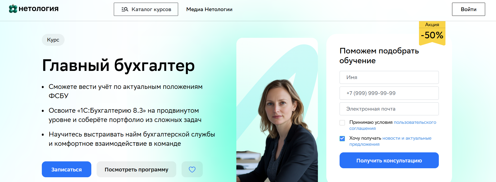
- ✅ Официальный сайт: netology.ru
- 💸 Цена: от 59 400 ₽ (со скидкой 50%)
- 💳 Рассрочка: 2 604 ₽/мес на 24 месяца без переплат
- 📚 Формат: видеолекции, воркшопы, тесты, практические задания, кейсы, обучение в «1С:Бухгалтерия 8.3»
- ⏳ Продолжительность: 3,5 месяца (с 12 января по 6 мая)
- 📜 Документ: удостоверение о профессиональной переподготовке
- 📝 Трудоустройство: шанс попасть в Т-Банк, консультации по резюме, дополнительные курсы по 1С
- 🔷 Для кого подходит курс: для опытных бухгалтеров, специалистов с опытом в финансах, начинающих специалистов, желающих перейти в бухгалтерию
Особенности:
Курс разработан для профессиональных бухгалтеров, стремящихся выйти на новый карьерный уровень. Студенты осваивают продвинутую работу в «1С:Бухгалтерии 8.3», учатся выстраивать процессы ведения учета и формировать учетную политику. Обучение проходит в дистанционной форме с доступом к материалам в течение двух лет после окончания. В рамках программы предусмотрены практические кейсы, работа с наставником и реальные задачи, соответствующие требованиям рынка. Предоставляется налоговый вычет и возможность вернуть деньги, если курс не подошёл. После завершения курса выпускники готовы к работе в роли главного бухгалтера или руководителя бухгалтерской службы.
Чему учатся студенты:
- Формировать методологию бухгалтерского и налогового учёта
- Правильно рассчитывать налоги и заполнять налоговую отчетность
- Составлять бухгалтерскую и финансовую отчетность
- Решать комплексные задачи по бухучету, кадровому и налоговому учету
- Управлять командой бухгалтеров и выстраивать эффективное взаимодействие
- Работать с актуальной версией «1С:Бухгалтерии 8.3»
- Готовить учетную политику для производственных компаний
Преподаватели:
- Юлия Трященко — ментор курса, главный бухгалтер с 10-летним стажем, автор курса по «1С»
- Александр Пятинский — директор департамента ОЦО, кандидат экономических наук
- Елена Маматходжаева — преподаватель и консультант УКЦ «Панорама», эксперт по бухучету и МСФО
- Светлана Пополитова — доцент МГТУ «СТАНКИН», консультант по управлению затратами и бюджетированию
Преимущества:
- Дистанционное обучение с гибким графиком занятий после 19:00
- Практические задания с обратной связью от опытных преподавателей
- Работа в актуальной версии 1С с разбором реальных кейсов
- Возможность трудоустройства и профессиональной переподготовки
- Поддержка менторов и кураторов на протяжении всего курса
- Доступ к материалам даже после завершения обучения
- Удостоверение установленного образца, подтверждающее квалификацию
- Портфолио из сложных задач для повышения карьерной привлекательности
Отзывы учеников:
Слушатели чаще всего выделяют удобный формат дистанционного обучения, профессионализм преподавателей и насыщенность курса реальными задачами. Особенно ценят поддержку менторов, практическую направленность обучения и гибкий график занятий, позволяющий совмещать учебу с работой.
Перейти на официальный сайт курса8. Главный бухгалтер – Институт профессионального образования
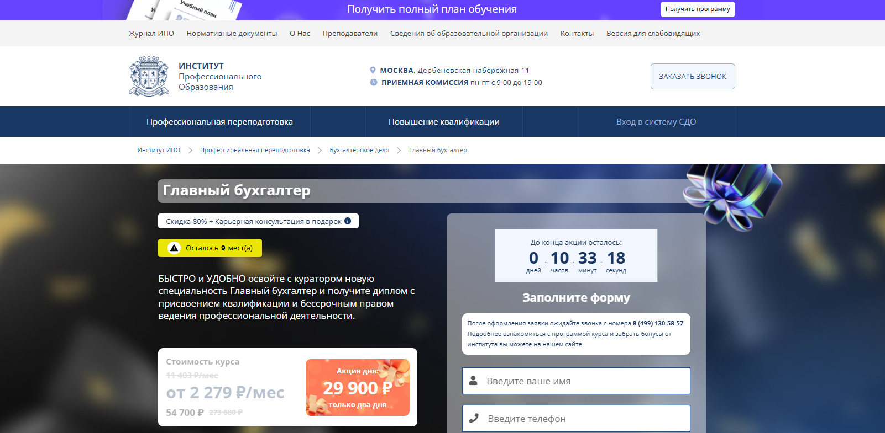
- ✅ Официальный сайт: ipo.msk.ru
- 💸 Цена: со скидкой до 54 700 ₽
- 💳 Рассрочка: от 2 279 ₽/мес на 12, 24 или 36 месяцев
- 📚 Формат: дистанционное обучение с кураторами, видеоуроки, домашние задания, тесты, практические кейсы в 1С
- ⏳ Продолжительность: 12 месяцев (или 6 экстерном), 1060 часов
- 📜 Документ: диплом о профессиональной переподготовке с правом ведения деятельности
- 📝 Трудоустройство: диплом дает право работать по профессии в любой организации
- 🔷 Для кого подходит курс: для начинающих специалистов и опытных бухгалтеров со средним или высшим образованием
Особенности:
Программа создана для подготовки профессиональных бухгалтеров с нуля и повышения квалификации действующих специалистов. В курс входят видеоуроки и практические задания по программам 1С, охватывающим налоговый и бухгалтерский учеты, финансовую отчетность и бухучет. Обучение полностью дистанционное, не требует посещения института. Каждый студент получает доступ к образовательной платформе и персонального куратора. Форматы обучения адаптированы под гибкий график. Все документы о прохождении курсов вносятся в федеральную систему ФИС-ФРДО. После окончания курса студенты получают официальные дипломы установленного образца.
Чему учатся студенты:
- Вести бухгалтерский и налоговый учет на всех этапах
- Формировать бухгалтерскую и финансовую отчетность
- Работать в 1С:Бухгалтерия, 1С:Кадры, 1С:Торговля
- Понимать основы аудита и законодательства РФ
- Анализировать финансовые показатели предприятия
- Рассчитывать налоги, начислять зарплаты сотрудникам
- Применять профессиональную этику в бухучете
Преподаватели:
- Ульянкин Олег Валерьевич — кандидат экономических наук
- Смагина Виктория Игоревна — кандидат экономических наук
- Ветрова Екатерина Александровна — кандидат экономических наук
- Морозов Сергей Александрович — практик, директор компании
- Моторин Дмитрий Викторович — бизнес-тренер
- Борисов Александр Николаевич — бизнес-консультант
- Кузнецова Татьяна Викторовна — бизнес-тренер
- Михновец Дарья Александровна — психолог, бизнес-тренер
- Шакаров Михаил Русланович — бизнес-тренер
- Андреев Алексей Александрович — аудитор, кандидат экономических наук
- Степочкина Ирина Юрьевна — преподаватель, кандидат экономических наук
- Казаков Сергей Витальевич — директор УПЦ, кандидат экономических наук
- Рыжих Анастасия Игоревна — директор УПЦ, кандидат экономических наук
- Ашина Елена Александровна — налоговый консультант
Преимущества:
- Обучение проходит полностью в дистанционной форме
- Программа включает все аспекты ведения бухгалтерии и налоговой отчетности
- Выдается диплом, признанный государственными структурами
- Поддержка от опытных преподавателей и кураторов
- Адаптация графика обучения под работающих специалистов
- Доступ к платформе urait.ru включён в стоимость
- Обучение с реальными примерами и практикой в 1С
- Аккредитация и регистрация документов в ФИС-ФРДО
Отзывы учеников:
Студенты чаще всего отмечают: удобный формат обучения, четко структурированные материалы курса, поддержку куратора, актуальные знания по профессии бухгалтера, удобный график и выгодную стоимость курсов. Также выделяют возможность совмещения обучения с работой и практическую пользу полученных знаний.
Перейти на официальный сайт курса9. Главный бухгалтер – Учебный центр АПОК
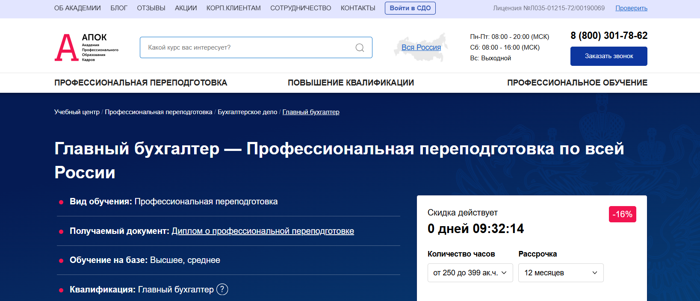
- ✅ Официальный сайт: apokdpo.ru
- 💸 Цена: от 20 980 ₽ со скидкой -16%
- 💳 Рассрочка: на 6 и 12 месяцев без процентов, от 1 748 ₽ в месяц
- 📚 Формат: дистанционное обучение, видеоматериалы, электронные учебники, тестирование, итоговая аттестация
- ⏳ Продолжительность: от 1 месяца, 250–1500 часов
- 📜 Документ: диплом о профессиональной переподготовке, внесение данных в ФИС ФРДО
- 📝 Трудоустройство: возможность повышения в должности, помощь в переговорах с работодателем о компенсации обучения
- 🔷 Для кого подходит курс: для начинающих бухгалтеров, специалистов со средним или высшим образованием, опытных бухгалтеров, желающих повысить квалификацию
Особенности:
Программа позволяет освоить профессию бухгалтера в удобном формате с любого региона России. Благодаря дистанционным курсам, слушатели изучают бухгалтерское дело без отрыва от работы. Занятия проводят опытные преподаватели, а учебный план включает дисциплины, востребованные на рынке. Возможность пройти обучение с гибким графиком особенно удобна для работающих специалистов. Стоимость обучения адаптирована под разный уровень подготовки, а рассрочка делает курс доступным для большинства. Доставка документов осуществляется по всей России, а диплом официально зарегистрирован. Программа актуальна для желающих изучить ведение бухгалтерского учета, налоговую отчетность и приобрести практические навыки. После завершения обучения выпускники получают документы, соответствующие требованиям законодательства.
Чему учатся студенты:
- Пониманию сущности и организации аудита
- Навыкам ведения налогового и управленческого учета
- Составлению бухгалтерской и статистической отчетности
- Анализу финансовой отчетности организаций
- Владению корпоративными финансами
- Правилам деловой переписки и имиджа руководителя
- Презентационным навыкам и конфликтологии
Преподаватели:
- Ефимова Любовь Андреевна — методист учебного отдела, автор программы, специалист в сфере бухгалтерии
Преимущества:
- Дистанционная форма обучения — подходит для любого графика
- Официальная лицензия и регистрация в ФИС ФРДО
- Бесплатная доставка документов после окончания курса
- Возможность создать персональную учебную программу
- Подходит как для начинающих специалистов, так и для опытных бухгалтеров
- Налоговый вычет 13% после прохождения курсов
- Скидки по акциям: повторное обучение, «Ученая семья», 2=3
- Возврат денег при несоответствии ожиданий
Отзывы учеников:
Выпускники подчеркивают удобный формат обучения, структурированные материалы курса и возможность пройти обучение без отрыва от основной работы. Также отмечают полезность практических заданий и доступность преподавателей. Многие прошли курс и получили повышение на текущем месте работы.
Перейти на официальный сайт курса10. Главный бухгалтер – Учебный центр дополнительного профессионального образования «ЭКОДПО»
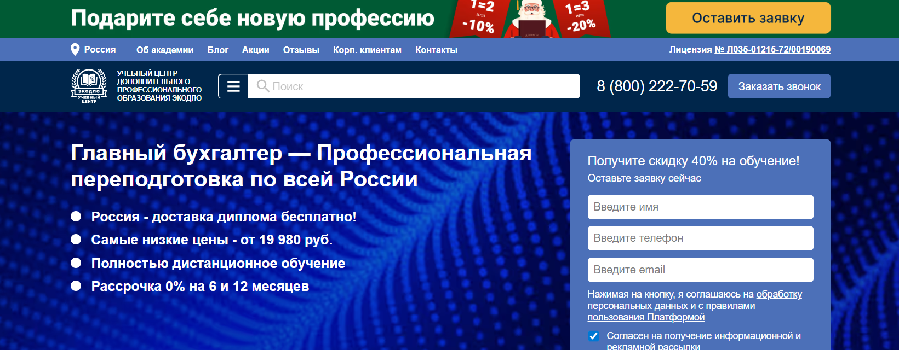
- ✅ Официальный сайт: ecodpo.ru
- 💸 Цена: от 19 980 ₽ (скидка 40%)
- 💳 Рассрочка: 0%, на 6 или 12 месяцев от 1 665 ₽/мес,
- 📚 Формат: дистанционные курсы, видеолекции, онлайн-тесты, методические материалы, вебинары
- ⏳ Продолжительность: от 1,5 месяцев (от 250 часов)
- 📜 Документ: диплом о профессиональной переподготовке установленного образца
- 📝 Трудоустройство: возможность работать в компаниях, государственных и муниципальных учреждениях
- 🔷 Для кого подходит курс: начинающим и опытным бухгалтерам, специалистам с профильным и непрофильным образованием
Особенности:
Программа рассчитана как на начинающих бухгалтеров, так и на опытных специалистов, желающих повысить квалификацию. Учебный процесс организован в дистанционной форме, что дает свободу выбора времени и места обучения. Все учебные материалы доступны 24/7 через личный кабинет. После прохождения курса выпускники получают легальный диплом, внесённый в ФИС ФРДО. Занятия сопровождаются консультациями преподавателей, а итоговая аттестация возможна с неограниченным числом пересдач. Оформление рассрочки без процентов происходит в день обращения. Доставка документов осуществляется бесплатно по всей России. Предусмотрены тарифы с индивидуальной программой под конкретные задачи слушателя.
Чему учатся студенты:
- Вести бухгалтерский и налоговый учет
- Составлять бухгалтерскую и налоговую отчетность
- Работать с программами 1С и другими системами учета
- Проводить аудит и анализ финансовой отчетности
- Оформлять первичные бухгалтерские документы
- Изучать корпоративные финансы и управленческий учет
- Повышать профессиональный уровень в сфере бухгалтерия
Преподаватели:
- Васильева Елизавета Ивановна — методист, автор курса «Главный бухгалтер», специалист с опытом разработки образовательных программ в соответствии с ФГОС
Преимущества:
- Гибкий график обучения без отрыва от работы
- Дистанционная форма — доступ с любого устройства
- Диплом выдается уже через 1 день после оплаты (тариф VIP)
- Бесплатная доставка диплома Почтой России
- Не требуется профильный опыт или стаж
- Индивидуальные образовательные маршруты по запросу
- Возможность рассрочки на 6 или 12 месяцев без переплат
- Внесение данных в ФИС ФРДО подтверждает официальность диплома
Отзывы учеников:
Слушатели отмечают доступность материалов, удобный формат и поддержку кураторов. Студенты довольны качеством подачи информации и возможностью получить профессию с нуля. Многие уже применяют знания на практике, отмечая высокий уровень организации и оперативную доставку документов.
Перейти на официальный сайт курса11. Главный бухгалтер – НЦПО
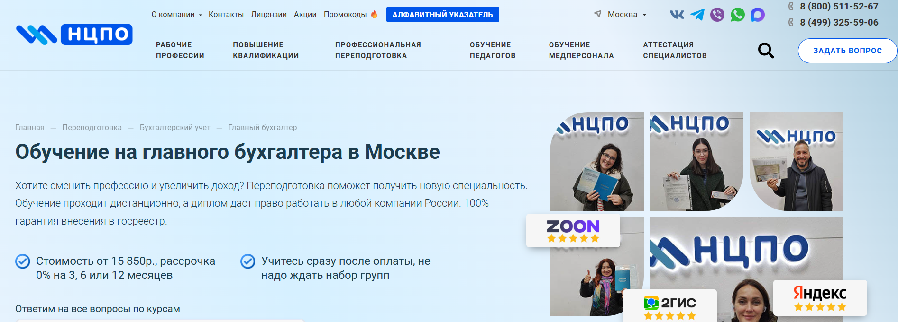
- ✅ Официальный сайт: ncpo.ru
- 💸 Цена: от 15 850 ₽ (со скидкой 1 400 ₽ при оплате в день заказа)
- 💳 Рассрочка: 0% на 3, 6 или 12 месяцев, от 1 320 ₽ в месяц
- 📚 Формат: дистанционные курсы, доступ к платформе 24/7, видеолекции, тесты, методические материалы
- ⏳ Продолжительность: от 256 академических часов
- 📜 Документ: диплом о профессиональной переподготовке с внесением в реестр ФРДО
- 📝 Трудоустройство: помощь в выборе программы и консультации по практике
- 🔷 Для кого подходит курс: для начинающих специалистов, экономистов, управленцев, предпринимателей и всех, кто хочет сменить профессию
Особенности:
Программа переподготовки позволяет получить востребованную профессию бухгалтера дистанционно, не отрываясь от текущей работы. Студенты проходят обучение на удобной платформе с круглосуточным доступом. Учебный план адаптирован под реальные требования бухгалтерии, включая налоговый учёт, финансовую отчётность и программы 1С. Диплом бессрочный и признаётся на всей территории РФ. Обучение сопровождается юридическими гарантиями и официальным договором. Все документы доставляются бесплатно. После завершения обучения выпускники получают документ государственного образца. Поддержка кураторов и постоянная связь с преподавателями позволяют уверенно пройти обучение даже без опыта в профессии бухгалтера.
Чему учатся студенты:
- Вести бухгалтерский и налоговый учет
- Формировать бухгалтерскую и налоговую отчетность
- Работать в программах 1С и других бухгалтерских системах
- Понимать нормы налогового законодательства
- Анализировать финансовую отчётность
- Организовывать учетные процессы в компаниях разных форм собственности
Преподаватели:
- Терешков Александр Леонидович — генеральный директор, эксперт в сфере дополнительного профессионального образования
- Грезнева Диана — преподаватель с опытом работы в коммерческой и бюджетной бухгалтерии
- Малкова Анна — специалист в области налогового учета и фискальной отчётности
Преимущества:
- Дистанционное обучение в удобном формате без привязки к месту
- Бессрочный диплом с внесением в государственный реестр
- Платформа с доступом 24/7 и полным пакетом учебных материалов
- Поддержка опытных преподавателей и консультации на всех этапах
- Официальный договор с прозрачными условиями
- Возможность совмещать обучение с работой
- Гибкие сроки и доступная стоимость курсов
- Профессиональная переподготовка подходит как начинающим, так и опытным бухгалтерам
Отзывы учеников:
Студенты отмечают удобный формат обучения, высокий профессиональный уровень преподавателей, понятную подачу материала и простоту доступа к платформе. Также часто хвалят оперативную обратную связь и быструю выдачу дипломов. Многие подчеркивают, что курс помог устроиться на новую работу или повысить зарплату в текущей должности.
Перейти на официальный сайт курса12. Главный экономист – Русская Школа Управления
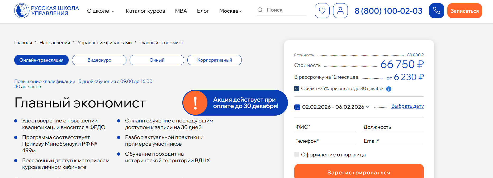
- ✅ Официальный сайт: uprav.ru
- 💸 Цена: от 66 750 ₽ в зависимости от формата
- 💳 Рассрочка: доступна от 6 230 ₽/мес до 12 месяцев
- 📚 Формат: дистанционные видеокурсы, онлайн-трансляции, очные занятия, практика, разбор кейсов, доступ к материалам
- ⏳ Продолжительность: 40 академических часов (5 дней с 09:00 до 16:00)
- 📜 Документ: удостоверение о повышении квалификации, вносится в ФРДО
- 📝 Трудоустройство: повышение квалификации для продвижения по карьерной лестнице
- 🔷 Для кого подходит курс: для руководителей, начинающих и опытных специалистов, компаний, главных бухгалтеров, сотрудников в сфере управленческого и налогового учета
Особенности:
Программа разработана для профессиональных бухгалтеров и специалистов, желающих углубить знания в области финансового моделирования, управленческого учета и бухгалтерской отчетности. Курс проходит с реальной практикой и анализом кейсов, что позволяет применять полученные навыки уже в процессе обучения. После завершения обучения доступ к видеоматериалам сохраняется бессрочно, а к трансляции — на 30 дней. Материалы курса регулярно обновляются, что помогает слушателям быть в курсе изменений в законодательстве и практиках. Учебный процесс построен с учетом гибкого графика обучения и проходит в формате, удобном для тех, кто совмещает учебу с работой. Также предусмотрена возможность прохождения дистанционного обучения без отрыва от деятельности. Завершение курса подтверждается документом государственного образца с семью степенями защиты. Занятия проводят опытные преподаватели, практикующие в сфере финансов и бухгалтерии.
Чему учатся студенты:
- Вести управленческий учет и интегрировать его с бухгалтерским учетом
- Разрабатывать систему отчетности для бизнеса
- Анализировать финансовую и налоговую отчетность
- Планировать и оптимизировать финансовые процессы
- Применять методы финансового моделирования и прогнозирования
- Управлять затратами и издержками предприятия
Преподаватели:
- Петров Алексей Александрович — практикующий аудитор, член Московской аудиторской палаты, бизнес-тренер
- Одинцов Дмитрий Сергеевич — к.ф.-м.н., CFA, ACCA, FRM, эксперт в сфере финансового анализа и управленческого учета
- Лукинский Дмитрий Георгиевич — специалист по корпоративным финансам и инвестиционному анализу
- Плотницкая Лариса Ивановна — бизнес-тренер и коуч с опытом работы на уровне топ-менеджмента
Преимущества:
- Обучение в дистанционной форме с бессрочным доступом к материалам
- Актуальная программа, соответствующая приказу Минобрнауки РФ № 499м
- Форматы обучения под разные графики: очный, онлайн, видеокурс
- Разбор кейсов участников и обратная связь от преподавателей
- Официальный документ о повышении квалификации вносят в ФРДО
- Подходит для бухгалтеров коммерческой сферы, начинающих специалистов и опытных финансовых экспертов
- Регулярное обновление учебных материалов на образовательной платформе
- Возможность пройти обучение с гибким графиком
Отзывы учеников:
Слушатели отмечают высокую квалификацию преподавателей, особенно хвалят лекции Дмитрия Лукинского. В отзывах часто упоминают насыщенность практическими занятиями, удобный формат дистанционного обучения и полезность полученных знаний для реальных задач в сфере бухгалтерского учета и управления финансами.
Перейти на официальный сайт курсаБухгалтер — ключевая фигура в финансовом мире
Современный бухгалтер — это не просто специалист, ведущий учет. Это финансовый аналитик, стратег и хранитель экономического здоровья предприятия. От его работы зависит стабильность бизнеса, правильность налогов и эффективность финансовых решений. Профессия бухгалтера остается одной из самых востребованных в России.
Кто такой бухгалтер?
Бухгалтер — это специалист, который отвечает за ведение финансового и налогового учета компании. Он контролирует движение денежных средств, формирует отчетность и следит за соблюдением законодательства. Главная задача бухгалтера — обеспечить прозрачность и точность финансовых операций.
- Ведет учет доходов и расходов организации.
- Составляет бухгалтерский баланс и налоговые декларации.
- Контролирует финансовые операции и платежи.
- Участвует в формировании бюджета и анализе затрат.
Что делают бухгалтеры и чем занимаются?
Работа бухгалтера включает множество направлений. Одни специалисты отвечают за участок заработной платы, другие — за налоги, третьи — за анализ и планирование финансов. В крупных организациях функции распределяются между несколькими бухгалтерами, а в малом бизнесе часто работает один универсальный специалист.
- Бухгалтер по расчету заработной платы — рассчитывает зарплату, налоги и взносы.
- Главный бухгалтер — руководит финансовым отделом и отвечает за общую отчетность.
- Налоговый бухгалтер — ведет взаимодействие с налоговыми органами.
- Бухгалтер по учету ТМЦ — следит за движением товаров и материалов.
Что должен знать и уметь бухгалтер?
Чтобы стать профессионалом, бухгалтер должен обладать не только теоретическими знаниями, но и практическими навыками работы с программами и документами. Автоматизация сделала процесс учета проще, но требования к аналитическим способностям выросли.
- Бухгалтер обязан знать основы бухгалтерского и налогового законодательства.
- Владеть современными учетными программами (1С:Бухгалтерия, Контур, МойСклад и др.).
- Понимать принцип формирования отчетности и финансового анализа.
- Иметь внимательность к деталям и высокую ответственность.
- Разбираться в экономике предприятия и бизнес-процессах.
Востребованность и зарплаты бухгалтеров в России
Несмотря на активное внедрение автоматизации, профессия бухгалтера в России остается востребованной. Компании нуждаются в специалистах, способных не только вводить данные, но и анализировать финансовую информацию, корректно общаться с налоговыми службами и предлагать решения для оптимизации расходов.
- Средняя зарплата бухгалтера в России — от 60 000 до 120 000 рублей в месяц.
- Главные бухгалтеры крупных организаций зарабатывают до 250 000 рублей.
- Начинающие специалисты получают около 45 000 рублей.
- Наиболее активный спрос наблюдается в Москве, Санкт-Петербурге и крупных промышленных центрах.
Как стать бухгалтером и где учиться?
Чтобы стать бухгалтером, нужно получить профильное образование. Оптимально выбрать направление “Бухгалтерский учет, анализ и аудит”. После обучения можно повышать квалификацию на курсах или проходить сертификацию профессиональных бухгалтеров.
- Получить среднее профессиональное или высшее экономическое образование.
- Освоить профильные программы учета и отчетности.
- Пройти стажировку в бухгалтерии.
- Повышать квалификацию каждые 2–3 года.
Наиболее престижные вузы России для бухгалтеров: РЭУ им. Г. В. Плеханова, Финансовый университет при Правительстве РФ, МГУ им. Ломоносова, СПбГУ.
Преимущества и перспективы профессии
Профессия бухгалтера имеет ряд преимуществ, которые делают ее популярной среди студентов и специалистов.
- Стабильность и высокий спрос на рынке труда.
- Возможность карьерного роста до финансового директора.
- Достойный доход и гибкий график в частных компаниях.
- Возможность работать удаленно.
Что такое обучение на бухгалтера и кому оно подходит?
Обучение на бухгалтера — это система профессиональной подготовки, где студенты получают базовые знания по бухгалтерскому учету, налоговому учету и финансовой отчетности для работы в коммерческой организации или на индивидуального предпринимателя. Такие образовательные программы подходят начинающим специалистам без опыта, тем, кто хочет сменить профессию, а также действующим бухгалтерам, которые стремятся повысить профессиональный уровень и углубить практические навыки ведения бухгалтерской и налоговой отчетности.
С чего начать обучение по бухгалтерскому учету с нуля?
Если вы новичок и только выбираете обучение на бухгалтера с нуля, сначала стоит определить цель: работать помощником бухгалтера, главным бухгалтером или вести бухгалтерию для собственного бизнеса. Затем рекомендуется пройти обучение по базовым программам бухгалтерского учета и налогового учета, где программы включают основы бухгалтерского учета, работу с первичными бухгалтерскими документами, а также практические задания в 1С: Бухгалтерия.
Какие форматы обучения существуют?
Современные образовательные организации предлагают разные форматы обучения: очное, онлайн и дистанционное обучение, что позволяет подобрать удобный формат под ваш график обучения и личные предпочтения. Многие центры используют смешанные форматы обучения, когда занятия проходят в виде вебинаров, очных практических занятий и самостоятельной работы с учебными материалами на образовательных платформах с круглосуточным доступом.
Что дает дистанционное обучение по ведению бухгалтерии?
Дистанционное обучение на бухгалтера позволяет проходить обучение в удобное время из любой точки мира, получая доступ к видеолекциям, учебным материалам и практическим заданиям через онлайн-платформы. Слушатели дистанционных курсов по бухгалтерии осваивают ведение учета, подготовку бухгалтерской и налоговой отчетности, а также работу в программах 1С под руководством опытных бухгалтеров и экспертов-практиков.
Чему учат на курсах по бухгалтерскому учету для начинающих?
Курсы по бухгалтерскому учету для начинающих включают изучение основ бухгалтерского учета, строения плана счетов, учету основных средств, материалов, расчетов с контрагентами и формирования бухгалтерской отчетности. В процессе обучения особое внимание уделяется практическим навыкам: студенты выполняют практическое задание по ведению бухучета, составляют проводки, работают с первичными бухгалтерскими документами и осваивают ведения учета в 1С.
Какие навыки нужны, чтобы работать в бухгалтерии после обучения?
После завершения обучения на бухгалтера важно уметь вести учет хозяйственных операций, правильно отражать доходы и расходы, рассчитывать налоги и формировать финансовую и налоговую отчетность по действующим стандартам. Также востребованными считаются навыки работы в программах 1С, знание налогового законодательства и умение применять его на практике, а еще — уверенное владение электронными системами сдачи отчетности и документооборота.
Чем отличается обучение профессии бухгалтера от высшего образования по направлению бухгалтерия?
Краткосрочные курсы по бухгалтерскому учету и налоговому учету ориентированы на практику и быстрое получение необходимых навыков для трудоустройства, тогда как программы высшего и среднего профессионального образования дают более широкий теоретический фундамент. Обучение на бухгалтера в формате курсов чаще всего направлено на конкретные задачи: вести бухгалтерский и налоговый учет, работать в 1С, готовить отчетность, тогда как профильное образование охватывает экономику, финансы, аудит и смежные специальности.
Сколько длится обучение и от чего зависят сроки?
Сроки обучения на бухгалтера зависят от формата обучения и глубины программы: интенсивные курсы могут длиться от 2–3 месяцев, а комплексные программы профессиональной подготовки — до 10–12 месяцев. При дистанционной форме многие образовательные центры предоставляют доступ к материалам курса на срок до года, чтобы слушатели могли проходить обучение в удобном темпе и возвращаться к лекциям и практическим заданиям.
Можно ли пройти обучение по бухгалтерскому учету дистанционно с дипломом или сертификатом?
Многие образовательные платформы и центры предлагают дистанционное обучение на бухгалтера с официальными документами: выпускники получают дипломы, сертификаты или удостоверения установленного образца после окончания курсов. По итогам прохождения курсов предусмотрена итоговая аттестация: тестирование, экзамен или защита выпускного проекта, после чего документы об окончании обучения можно предоставлять работодателям для подтверждения квалификации.
Кому подойдут курсы бухгалтера для начинающих и можно ли учиться с нуля?
Курсы бухгалтера для начинающих создаются специально для тех, кто хочет освоить профессию бухгалтера с нуля, не имея экономического образования или опыта работы в сфере бухгалтерия. В таких программах студенты получают базовых знаний по бухучету, налогообложению и работе в 1С, проходят обучение на реальных примерах и постепенно переходят от простых операций к составлению полного баланса и отчетности.
Помогает ли обучение трудоустройству и развитию карьеры бухгалтера?
Качественное обучение на бухгалтера с практической направленностью, реальными кейсами и поддержкой опытных преподавателей повышает шансы на успешное трудоустройство и карьеру бухгалтера в компаниях малого и среднего бизнеса. Некоторые образовательные центры и онлайн-платформы дополнительно помогают выпускникам в трудоустройстве: предлагают стажировки, консультируют по резюме и проводят карьерные консультации для начинающих бухгалтеров.
Какие преимущества дают курсы по бухгалтерскому учету с практикой и реальными кейсами?
Курсы по бухгалтерскому учету с практикой позволяют отработать навыки ведения учета на примере реальных предприятий: слушатели заполняют первичные документы, формируют проводки и составляют бухгалтерскую отчетность. Работа с реальной практикой и кейсами помогает начинающим специалистам уверенно вести учет и легче адаптироваться в компаниях, где требуется самостоятельно вести бухгалтерский и налоговый учет в 1С.
Как выбрать курсы по обучению на бухгалтера среди множества предложений?
При выборе обучения на бухгалтера стоит обратить внимание на программу курса, наличие модулей по налоговому учету, работе в 1С, подготовке отчетности, а также на опыт преподавателей и отзывы выпускников. Важны также формы обучения, стоимость курсов, длительность, наличие практических заданий и документов об окончании обучения, чтобы полученные знания и навыки реально помогли строить успешную карьеру бухгалтера.
------------------------------------------------
Реклама. Информация о рекламодателе по ссылкам в статье.